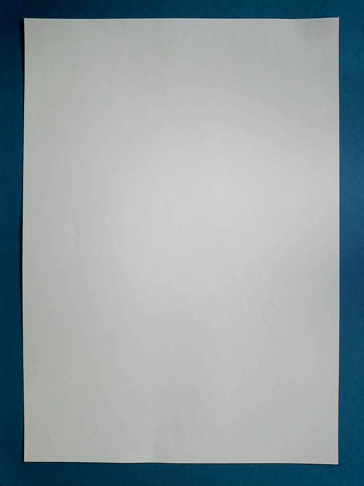
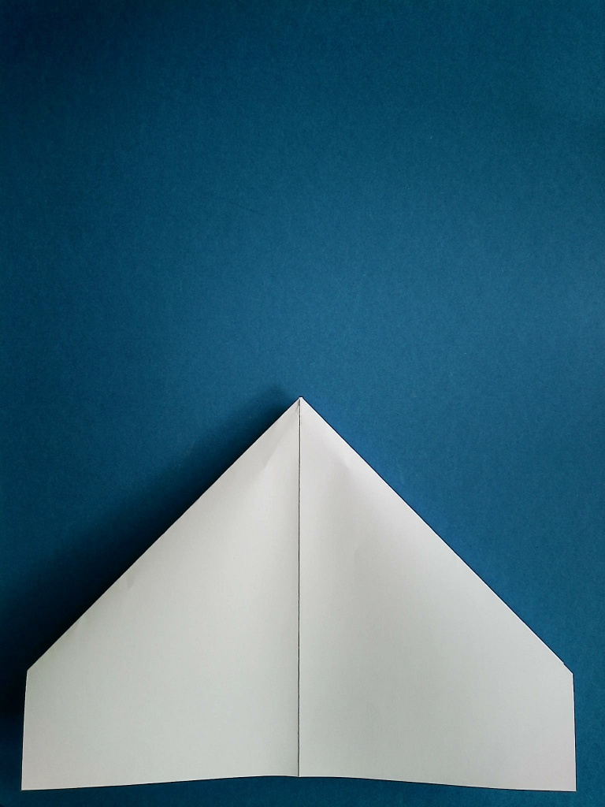
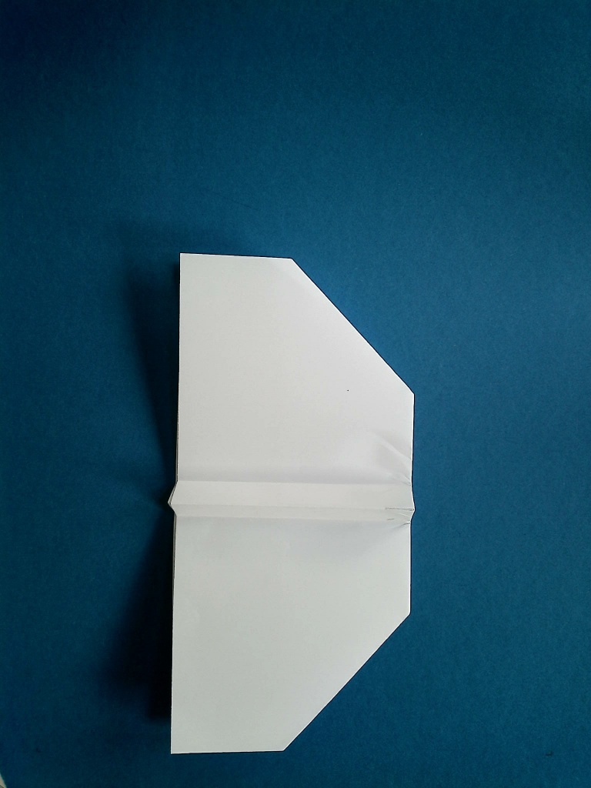

X-Wing
Dieses Flugzeug, nachempfunden nach den gleichnamigen Fliegern aus Star Wars, sieht genauso cool aus, wie sein Modell. Die Gleiteigenschaften sind nicht die besten, aufgrund seiner sperrigen Form.
1
Lege das Papier hochkant vor dich hin.

2
Falte das Papier längs in der Mitte und wieder zurück.
3
Das selbe Spiel von oben nach unten, aber ohne es danach wieder aufzufalten.
4
Falte die linke und rechte obere Ecken jeweils zur Mittelfalz
5
Falte das gesamte Blatt wieder auf und du solltest das Muster wie auf dem Bild sehen.
6
Jetzt kannst du die beiden Dreiecke in der Mitte des Blattes zusammenfalten, sodass die Dreiecke oben und unten deckungsgleich übereinander liegen.

7
Knicke die Spitze wie auf dem Bild eingezeichnet bis auf die Höhe der Diagonalen Seitenkanten.

8
Falte die linke Seite des Blattes mittig nach rechts.
9
Im nächsten Schritt faltest du die ersten Flügel des X-Wings. Knicke auf beiden Seiten jeweils die doppellagigen Flügel ab, sodass ca. 1-1,5cm für den Griff bleiben.
10
Falte die Flügel auf und drehe das Flugzeug um.
Nun kannst die erste Lage der Flügel beidseitig jeweils bis an den Griff heran falten.

11
Falte den letzten Schritt wieder auf und falte beide Seiten neu, dieses Mal bis zur gerade entstandenen Faltkante, wie auf dem Bild zu sehen ist.
12
Drehe den Flieger um und falte die Flügel auf dieser Seite ebenfalls bis zur Griffkante.
13
Falte die Flügel auch hier wieder auf und falte sie bis zur eben erzeugten Faltkante.
14
Die Winglets des Fliegers sind damit fertig und müssen nur noch ausgerichtet werden damit der X-Wing seine bekannte Form annimmt.
Herzlichen Glückwunsch, der X-Wing ist damit fertig. Viel Spaß beim Fliegen!